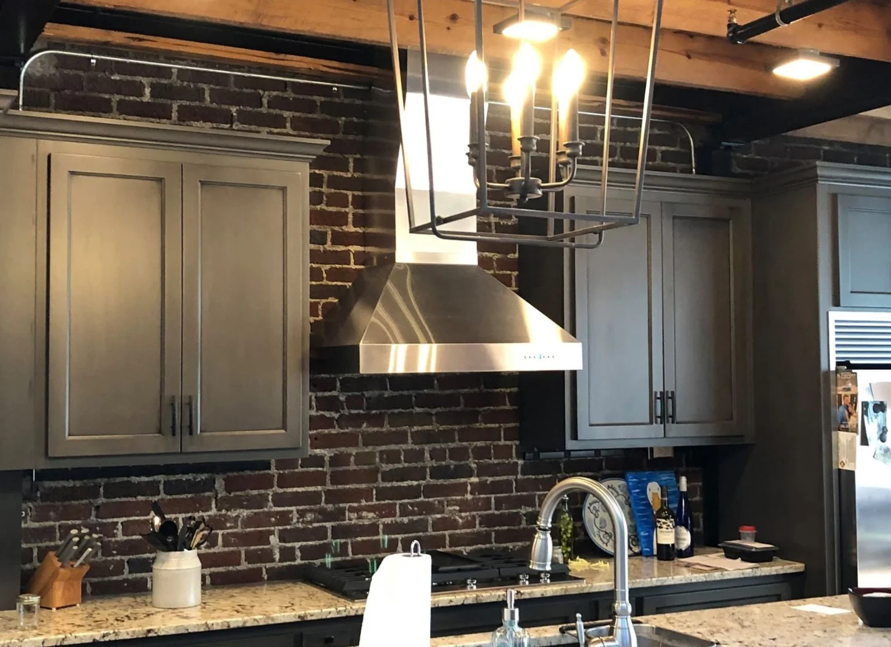

Built for your home
Custom construction
Kitchens, vanities, offices, built-ins and cabinet parts built to fit.
Our story
T-Squared Custom Cabinetry and Renovations has been doing hands-on, detail-focused work since 1998. The philosophy is straightforward: take pride in the details, be thoughtful with materials and give people an honest path to a result they will love.
Established 1998
T-Squared works on custom cabinets, kitchen and bathroom renovations, repairs, restorations and modifications. Work begins with measurements and the right construction for the job.
From material selection through installation, our goal is simple: clean fit, useful function and work that holds up.
Measure carefully. Build square. Finish the job properly.

SHOP SERVICES
From a renovation adjustment or cabinet modification to complete kitchens and baths, the work is sized to the job.
Built for your home
Kitchens, vanities, offices, built-ins and cabinet parts built to fit.
Existing spaces
Cabinet repairs, alterations, restoration and remodeling of existing spaces.
Traditional & Modern styles
Prefabricated cabinetry, vanity lines and work involving granite, marble and quartz.

WORKMANSHIP
Not every job needs new cabinets. Repair, modification, cabinet-line installation and custom construction all have their place.
We assess the condition, dimensions and scope, then recommend the approach that makes sense. A skilled finish matters more than selling extra work; sensible material choices and cabinet lines can protect the budget without sacrificing care in the installation.
Project inquiryCommon questions
No. Our pre-fab options are limited to Fabuware design and wood choice, but personally we love to work on interesting designs or integrating strong and beautiful woods. We're also collecting interest of selling particularly rarer wood like Wormy (Ambrosia) Maple
Yes. We handle the entire process of surfaces and cabinet installation. The exact scope is confirmed project by project.
Yes. Send a brief description, approximate measurements and photos. Plans can follow.
Yes. Winston-Salem and Mocksville are the main service areas. We also work in nearby communities; see the full list on the contact page or call to ask about your location.
PROJECT INQUIRIES
Call or share the basics of the project. Estimates start with a conversation.